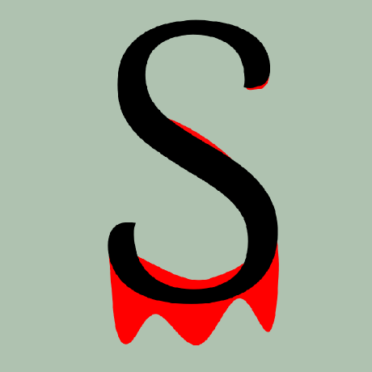

# Sylvain TOSONI
⚠️ Work In Progress ⚠️
Game Programming student at [Bellecour Ecole](https://www.bellecour.fr/).
## Where are you ?
Here you can find all informations about me.
From the contacts to my projects.
# Izydor
This project is the first of my bachelor at [Bellecour Ecole](https://www.bellecour.fr/).
I also used this project to try the creation of an editor using [Rust](https://www.rust-lang.org/) and [EFrame](https://crates.io/crates/eframe).
So you can create your own game based on it.
You just have to go at [GitHub Releases](https://github.com/eVisualUser/bellecour-gamebook/releases),
to find the last version of the client and the editor.
The guide is [right here](https://sylvain-game.notion.site/Guide-c3600c02665f42b8a4689875f5d09d4b).
## Project Restrictions
- [X] Only C/C++.
- [X] Only Console for rendering.
- [X] Collaborate with 3 game designers.
- [X] Making a story that is not too long.
## How to play
You can play it online or using the native version.
### Web
On the web version you must simply click on the choices buttons.
### Native
Those keys suppose that you are using an Azerty (French) keyboard.
|Key|Action|
|---|---|
|Up Arrow|Select the choice upper the current|
|Down Arrow|Select the choice under the current|
|Escape|Exit the game|
|+|Increase the frame size|
|-|Decrease the frame size|
## Play
So we created a game where you play as Izydor during a Zombie apocalypse in Poland.
You can try it on web, or if you are on Windows you can download it.
⚠️ Your malware protection and Windows will warn you about the exectuable. ⚠️
[Download](assets/Izydor_V1.2.zip)
[Play Online](https://evisualuser.github.io/izydor/)